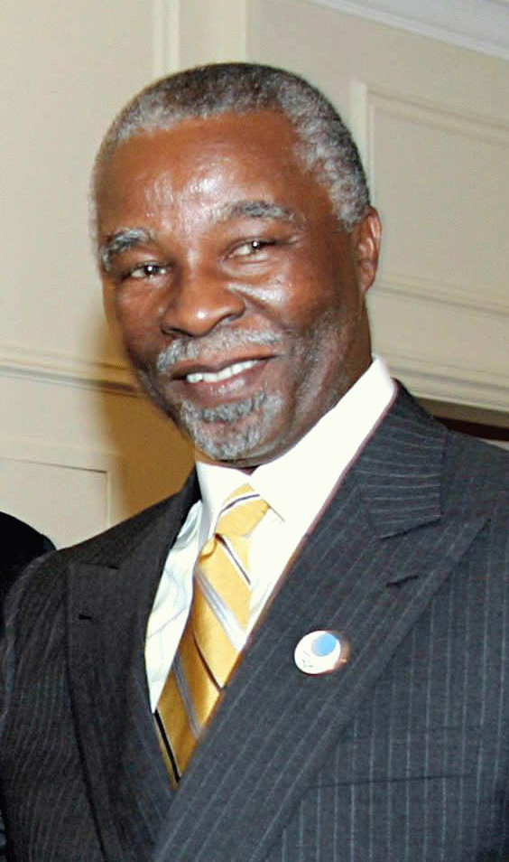

REPUBLIC OF SOUTH AFRICA
"Unity in diversity"
FIRST PRESIDENT

- Nelson Rolihlahla Mandela
- Political Party: A.N.C.
- In Office From: 10 May 1994.
- In Office until: 14 June 1999.
- Born: 18 July 1918.
- Died: 5 December 2013.
- Aged: 95 Years Old.
SECOND PRESIDENT

- Thabo Mvuyelwa Mbeki
- Political Party: A.N.C.
- In Office From: 14 june 1999.
- In Office Until: 24 September 2008 [Resigned].
- Born: 18 June 1942.
- Aged: 82 Years Old.
Acting President
- Ivy Florence Matsepe-Casaburri.
- Political Party: A.N.C.
- In Office: 25 September 2008.
- In Office :14 hours.
- Born: 18 September 1937.
- Died: 6 April 2009.
- Aged: 71 Years Old.
THIRD PRESIDENT
- Kgalema Petrus Motlanthe.
- Political Party: A.N.C.
- In Office From: 25 September 2008.
- In Office Until: 9 May 2009.
- Born: 19 July 1949.
- Aged: 75 Years Old.
FOURTH PRESIDENT
- Jacob Gedleyihlekisa Zuma
- Political Party: A.N.C.
- In Office From: 9 May 2009.
- In Office Until: 14 February 2018 [Resigned].
- Born: 12 April 1942.
- Aged: 82 Years Old.
FIFTH PRESIDENT
Incumbent President
- Matamela Cyril Ramaphosa
- Political Party: A.N.C.
- In Office From: 15 February 2018.
- In Office Until: Present.
- Born: 17 November 1952.
- Aged: 71 Years Old.